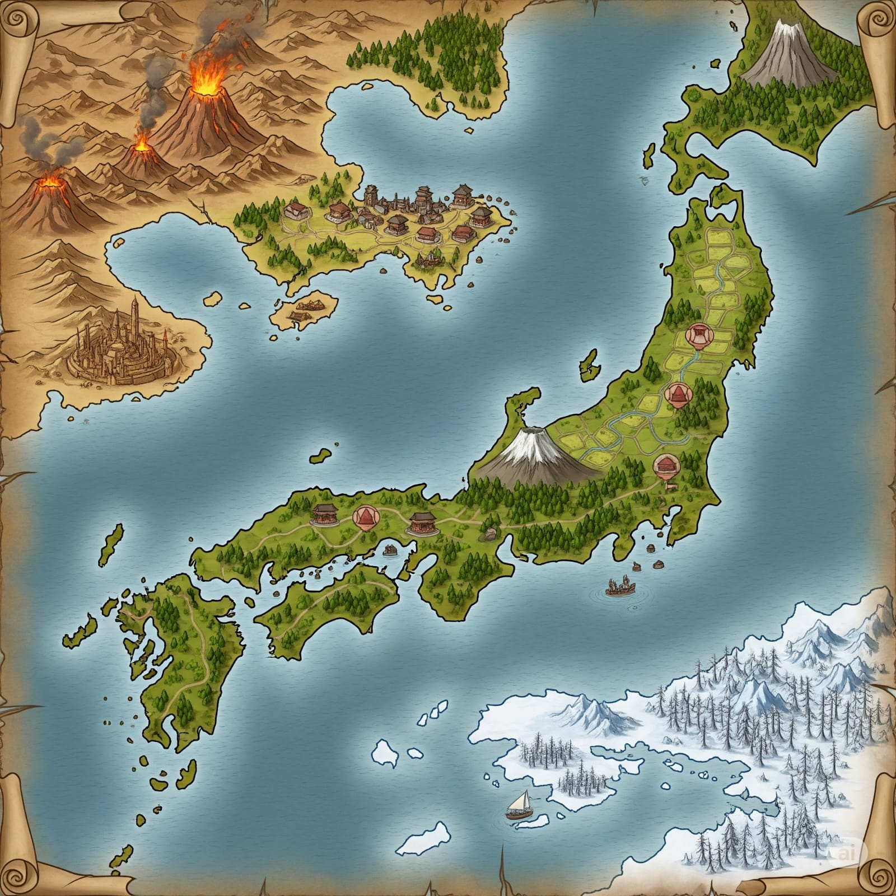

Ryūtsuchi
Geografia e divisione politica

Continente diviso in 3 parti:
- Terra vulcanica a nord-ovest
- Terra artica a sud-est
- Terra pianeggiante boschiva al centro
Nell'ambientazione, Nani e Gnomi sono quasi estinti.
Terra vulcanica
Terra calda al nord ovest del continente, separata dal mare dal resto.
Una penisola densamente popolata, sede della famiglia imperiale, fuggita dalla Terra pianeggiante boschiva per rimanere al sicuro dalla minaccia delle Wyvern. La città è considerata sicura perché costruita sopra un'intricata rete di tunnel e gallerie, che fungono da riparo in caso di attacco.
Una piccola isola sulla costa è la via d'accesso per l'Underdark, dove vivono i Drow.
La regione del Kanzaretsu comprende una catena montuosa di vulcani, casa di comunità di Dragonidi.
La costa meridionale è la regione di Sabakuro, desertica nell'entroterra e paludosa lungo le coste. Una città di una civiltà perduta offre riparo ai Tiefling.
Terra artica
Regione chiamata Hyosetsu. Terra fredda a sud del continente, caratterizzata da venti gelidi e neve perenne.
La terraferma è abitata dai Tabaxi, un popolo generalmente poco apprezzato dalle altre razze per la poca fiducia che si può riporre in loro.
Il golfo è abitato dai Tritoni.
Tra Tabaxi e Tritoni non scorre buon sangue, e sono spesso in disputa.
Terra pianeggiante boschiva
Arcipelago centrale del continente, di forma simile al Giappone, ma più grande di dimensioni.
Diviso in 3 regioni principali, da nord a sud:
- Moriya, del clan #missing
- Tsukigamine, del clan Agamine
- Shinkai no Kuni, del clan Mori
Moriya è abitata principalmente da Elfi Silvani. È presente un grande vulcano al centro dell'isola.
Nello Shinkai e nello Tsukigamine abitano principalmente Umani e Halfling. Gli Halfling sono un popolo nomade. Più di recente sono state annesse le tribù di Oni e Goblin delle isole a sud, contro le quali in passato si erano svolti diversi scontri.
Cultura
Si parlano principalmente due lingue, che corrispondono vagamente al giapponese del mondo reale:
- Comune antico
- Comune moderno
Ognuno parla anche la lingua comune alla propria razza; possono essere ceppi distinti, o dialetti di una lingua più comune.